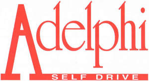

Trade Mark Journal No.2025/013 28 March 2025
UK00004171441 10 March 2025 (39)

- Class 39
- Vehicle hire; Passenger vehicle hire; Hire of vehicles; Vehicle hire services; Car hire; Vehicle contract hire; Arranging of vehicle hire; Arranging vehicle hire; Motor vehicle hire services; Rental and hire of vehicles; Hire of motor vehicles; Motor land vehicle hire services; Car hire services; Contract hire of motor vehicles; Hire of transport vehicles; Hire of cars; Contract hire of transport vehicles; Arranging of car hire; Truck and vehicle rental; Vehicle rental; Hired car transport; Automobile vehicle renting services; Booking of hire cars; Booking agency services for car hire; Motor vehicle rental; Hiring of motor vehicles; Vehicle rental services; Hiring of vehicles; Arranging of vehicle rental; Arranging vehicle rental; Automobile vehicle leasing services; Hiring of transport vehicles; Hire of road transport; Motor car rental; Arrangement of vehicle rental; Vehicle leasing services; Car rental; Rental of motor vehicles; Vehicles (Rental of -); Rental of vehicles; Motor land vehicle renting; Contract rental of vehicles; Car rental services; Motor land vehicle leasing services; Reservation services for vehicle rental; Rental of motor road vehicles; Provision of hired vehicles; Motor vehicle transport services; Rental of transport vehicles; Rental of vehicles for transport; Rental of transportation vehicles; Rental of vehicles for transportation; Rental of road vehicles; Vehicle transport services; Rental of motor land vehicles; Motor car transport services; Hiring of cars; Rental of motor cars; Leasing of motor vehicles; Automobile rental services; Car transport.
Wayne Platt
Tracy Platt